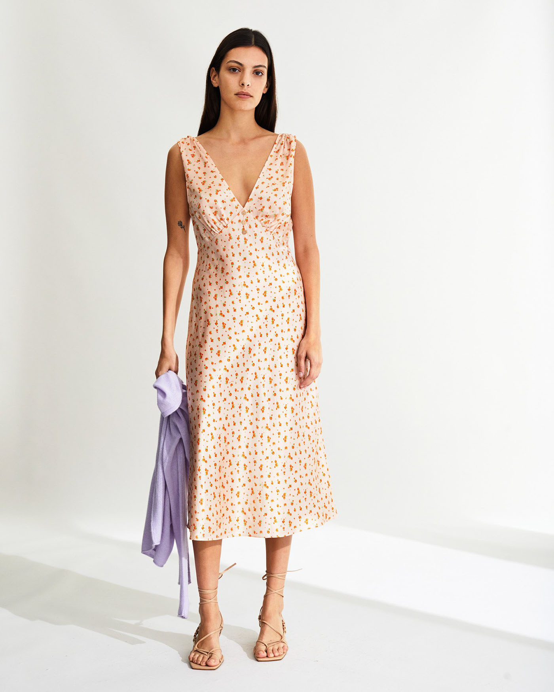

Robe Gabrielle
MINI ROSE PECHE
100% Soie
139€
Cette robe en soie présente une coupe droite. Elle est coupée dans le biais pour épouser vos formes sans les mouler. Les stylistes FROM FUTURE vous recommandent de prendre votre taille habituelle.
La mannequin porte l'article en taille S - 36. Taille du mannequin : 177 cm.
Robe mi-longue cache-cœur à manches courte en 100% satin de soie, Marta est un modèle basique avec son joli décolleté, qui marque la taille avec une bande. Cette robe légèrement évasée longueur mi-longue est un indemodable pour les beaux jours. Le petit plus ? Le détail des boutons le long de l'ouverture qui habillent encore plus la silhouette. Fermeture éclair invisible le long de votre côté gauche.